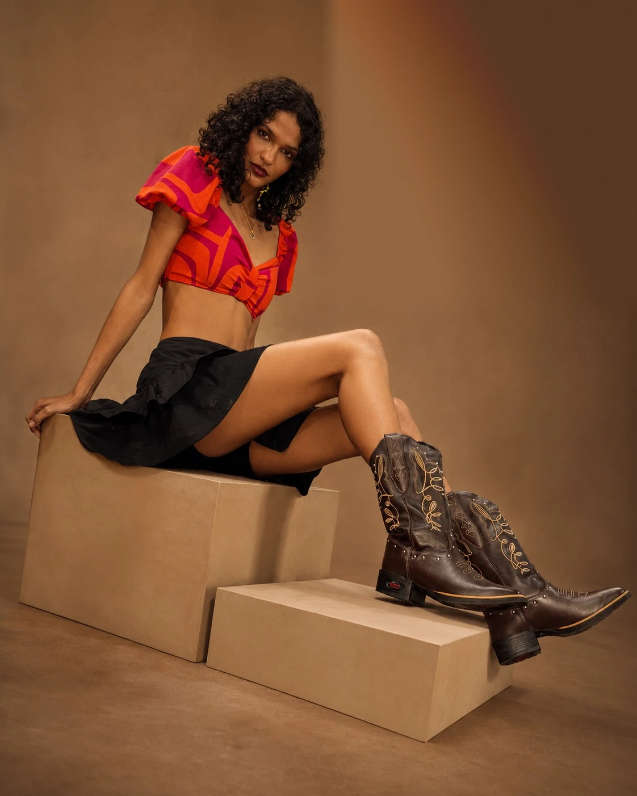
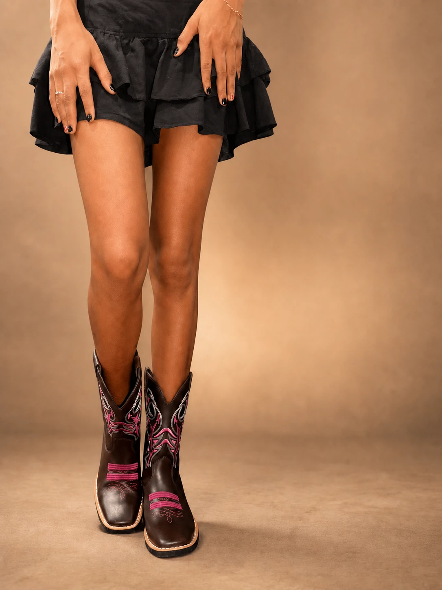

RUNWAY · EDITORIAL · BRAZIL
RAIANE
Presença que
ocupa a cena.


PASSARELA — EDITORIAL — PRESENÇA — MOVIMENTO — PASSARELA — EDITORIAL — PRESENÇA — MOVIMENTO —
01
A modelo
Do interior para a passarela, com disciplina, identidade e futuro.
Raiane transforma elegância e autenticidade em presença. Modelo de passarela, estudante e aluna do curso da ATM Modas, constrói uma trajetória consciente entre moda, formação e propósito.
Conheça a trajetória →02 Portfólio selecionado
EDITORIAL
EM MOVIMENTO
Produto em Cena
Parceiros
Passarela
BOOK + PERFIL PROFISSIONAL